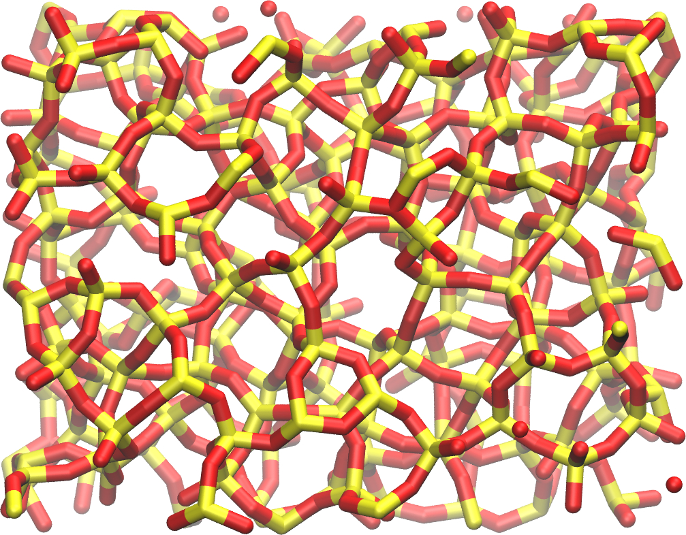

Adsorption of water in a crack
Adsorption of water in a silica crack using the grand canonical Monte Carlo method.
Objective: The purpose of this tutorial is to combine molecular dynamics and grand canonical Monte Carlo and simulate the adsorption of water molecules in a block of silica that contains a crack. If you already have a good grasp on LAMMPS, you can download directly the input scripts that will be written following this tutorial by clicking here.
Prerequisite: If you are new to LAMMPS, I recommend you to follow tutorial 01 first.
Note 1 - If you have any suggestion about these tutorials, please contact me by email at simon.gravelle at live.fr.
Note 2 - You can support me for 1 euro per month by clicking here. For a larger amount, I offer you personal assistance with you LAMMPS scripts.
Generation of the silica block
Let us generate a block of amorphous silica (SiO2). To do so, we are going to replicate a building block containing 3 Si and 6 O atoms. The data file for the SiO atoms can be downloaded by clicking here. This data file contains the coordinates of the atoms, their masses, and their charges, and can be directly read by LAMMPS using the read_file command. Let us replicate this molecule using LAMMPS, and apply an annealing procedure to obtain a block of amorphous silica.
Create a new input file in the same folder as the downloaded dataSiO.data, and copy the following line in it.
##################
# Initialization #
##################
units metal
boundary p p p
atom_style full
pair_style vashishta
neighbor 1.0 bin
neigh_modify delay 1
#####################
# System definition #
#####################
read_data data.SiO
replicate 4 4 4
Metalic units are used as required by the Vashishta potential. The Vashishta potential is a bond-angle energy based potential. This family of potential deduces which atoms are bonded together from their relative positions. Therefore we don't need to provide bond and angle information as we do with classic force field. These kind of potential are more computationally heavy than classical force field and require the use of a smaller timestep, but allow for the modelling of bond formation/breaking, which is what we need here as we want to create a crack in the silica. You can download it by clicking here The system is then replicated four times in all three directions of space. Then add the pair coeff, where we indicate that the first atom is Si, and the second is O, and add a dump for printing atoms trajectories:
#######################
# Simulation settings #
#######################
pair_coeff * * SiO.1990.vashishta Si O
dump dmp all atom 5000 dump.lammpstrj
Finally, let us create the run part of our script. We first start with a small phase at 6000 K, then cool down the system to 4000 K using a pressure of 100 atm. Then we cool down the system further while also reducing the pressure, then perform a small equilibration step at the final desired condition, 3 00K and 1 atm.
#######
# Run #
#######
velocity all create 6000 4928459 rot yes dist gaussian
fix nvt1 all nvt temp 6000 6000 0.1
timestep 0.001
thermo 1000
run 5000
unfix nvt1
fix npt1 all npt temp 6000 4000 0.1 aniso 100 100 1
run 50000
fix npt1 all npt temp 4000 300 0.1 aniso 100 1 1
run 200000
fix npt1 all npt temp 300 300 0.1 aniso 1 1 1
run 4000
write_data data.amorphousSiO
Note the use of the anisotropic pressure, so that all three directions of space are managed independently, which is better for a solid phase like here. For a liquid of a gas, use iso instead. After running the simulation, the final configuration data.amorphousSiO will be located in the same folder as your input file. You can download it by clicking here. The final system resembles: 
Cracking the silica
We are now going to dilate the block of silica to create a crack. Create a new folder, copy data.amorphousSiO and SiO.1990.vashishta in it, and create a new input.lammps file starting with:##################
# Initialization #
##################
units metal
boundary p p p
atom_style full
neighbor 1.0 bin
neigh_modify delay 1
#####################
# System definition #
#####################
read_data data.amorphousSiO
#######################
# Simulation settings #
#######################
pair_style vashishta
pair_coeff * * SiO.1990.vashishta Si O
dump dmp all atom 1000 dump.lammpstrj
Then, we are going to progressively increase the size of the box over z, thus forcing the silica to crack. To do so, we are going to make a loop using the jump command. At every step of the loop, the box dimension over x will be multiplied by a factor 1.005. For this step, we a NVT thermostat because we want to impose a deformation of the volume (i.e. NPT would be inappropriate). Add the following lines to the input script:
#######
# Run #
#######
fix nvt1 all nvt temp 300 300 0.1
timestep 0.001
thermo 1000
variable var loop 35
label loop
change_box all z scale 1.005 remap
run 2000
next var
jump input.lammps loop
run 20000
write_data data.dilatedSiO
After the dilatation, a final equilibration step of 20 picoseconds is performed. If you look at the dump file, or at this video, you can see the dilatation occurring step-by-step, and the atoms adjusting to the new box size. At first, the deformation are reversible (elastic regime), but at some point, bond start breaking and dislocation appear (plastic regime). You can download my final state by clicking here. The final system, with the crack, resembles:

Adding water
In order to add the water molecules, we are going to use the Monte Carlo method in the grand canonical ensemble (GCMC). In short, the system is put in contact with a virtual reservoir of given chemical potential, and multiple attempts to insert water molecules at random positions are made. Attempts are either accepted or rejected based on a Monte Carlo an acceptance rule. In a different folder, copy the data.dilatedSiO file previously generated as well as the TIP4P2005.txt file for the water molecule, and SiO.1990.vashishta file. Create a new input file, and copy the following lines into it:##################
# Initialization #
##################
units metal
boundary p p p
atom_style full
neighbor 1.0 bin
neigh_modify delay 1
pair_style hybrid/overlay vashishta lj/cut/tip4p/long 3 4 1 1 0.1546 10
kspace_style pppm/tip4p 1.0e-4
bond_style harmonic
angle_style harmonic
There are several difference with the previous input files used in this tutorial. All these differences are here to include the water to our simulation. First, we have to use two different force field, vashishta for SiO, and lj/cut/tip4p/long for our TIP4P water model, which can be done using the hybrid/overlay pair style. We also need a kspace solver to solve the long range Coulomb interaction associated with tip4p/long. Finally, we need to define the style for the bond and angle styles of the water molecules. Some of these features have been seen in tutorial 03. Before going further, we need to make a few change to our data file. Currently, data.dilatedSiO starts with this:
LAMMPS data file via write_data, version 30 Jul 2021, timestep = 90000
576 atoms
2 atom types
0.910777522101565 19.67480018949893 xlo xhi
2.1092682236518137 18.476309487947546 ylo yhi
-4.1701120819606885 24.75568979356097 zlo zhi
Masses
1 28.0855
2 15.9994
Atoms # full
(...)
We need to make some changes for the addition of water molecule. Modify the file so that it looks like that:
LAMMPS data file via write_data, version 30 Jul 2021, timestep = 90000
576 atoms
4 atom types
1 bond types
1 angle types
2 extra bond per atom
1 extra angle per atom
2 extra special per atom
0.910777522101565 19.67480018949893 xlo xhi
2.1092682236518137 18.476309487947546 ylo yhi
-4.1701120819606885 24.75568979356097 zlo zhi
Masses
1 28.0855
2 15.9994
3 15.9994
4 1.008
Atoms # full
(...)
Doing so, we anticipate that there will be 4 atoms types in the simulations, with O and H of H2O being indexes 3 and 4, respectively. There will also be 1 bond type and 1 angle type. The extra bond and extra angle lines are here for memory allocation. Now we can continue to fill the input.lammps file, by adding the system definition:
#####################
# System definition #
#####################
read_data data.dilatedSiO
molecule h2omol TIP4P2005.txt
create_atoms 0 single 19.5 10 10 mol h2omol 45585
group SiO type 1 2
group H2O type 3 4
After reading the data file and defining the h2omol molecule from the txt file, the create atoms command is used to include one single molecule in the system at the location 19.5 10 10. I've chosen these 3 values so that the water molecule is initially in the crack, and not overlapping with SiO atoms, you may have to choose different values if your simulation crashes. Not adding a molecule before starting the GCMC steps usually lead to failure, I am not sure why. Then we define the two groups for SiO and H2O. Then add the settings of the simulation:
#######################
# Simulation settings #
#######################
pair_coeff * * vashishta SiO.1990.vashishta Si O NULL NULL
pair_coeff * * lj/cut/tip4p/long 0 0
pair_coeff 1 3 lj/cut/tip4p/long 0.0057 4.42 # epsilonSi = 0.00403, sigmaSi = 3.69
pair_coeff 2 3 lj/cut/tip4p/long 0.0043 3.12 # epsilonO = 0.0023, sigmaO = 3.091
pair_coeff 3 3 lj/cut/tip4p/long 0.008 3.1589
pair_coeff 4 4 lj/cut/tip4p/long 0.0 0.0
bond_coeff 1 0 0.9572
angle_coeff 1 0 104.52
variable oxygen atom "type==3"
group oxygen dynamic all var oxygen
variable nO equal count(oxygen)
fix myat1 all ave/time 100 10 1000 v_nO file numbermolecule.dat
fix shak H2O shake 1.0e-4 200 0 b 1 a 1 mol h2omol
dump dmp all atom 2000 dump.lammpstrj
The force field vashishta apply only to Si and O of SiO, and not to the O and H of H2O thanks to the NULL parameters. Then pair coefficients for lj/cut/tip4p/long are defined between O atoms, as well as between O(SiO)-O(H2O) and Si(SiO)-O(H2O). Finally, the number of oxygen atoms will be printed in the file numbermolecule.dat, and the shake algorithm is used to maintain the shape of the water molecule over time. Again, some of these features have been seen previously, such as in tutorial 03. Let us make a first equilibration step:
#######
# Run #
#######
compute_modify thermo_temp dynamic yes
compute ctH2O H2O temp
compute_modify ctH2O dynamic yes
fix mynvt1 H2O nvt temp 300 300 0.1
fix_modify mynvt1 temp ctH2O
compute ctSiO SiO temp
fix mynvt2 SiO nvt temp 300 300 0.1
fix_modify mynvt2 temp ctSiO
timestep 0.001
thermo 1000
run 5000
We use to different thermostats for SiO and H2O, which is better when you have two species. Its particularly important here as the number of water molecules will fluctuate. We use a compute_modify dynamic for water to specify that the number of molecules is not constant. Finally, let us use the gcmc fix and perform the grand canonical Monte Carlo step:
variable tfac equal 5.0/3.0
fix fgcmc H2O gcmc 100 100 0 0 65899 300 -0.5 0.1 mol h2omol tfac_insert ${tfac} group H2O shake shak full_energy
run 250000
write_data SiOwithwater.data
The tfac_insert ensures that the correct estimate is made for the temperature of the inserted water molecules by taking into account the internal degrees of freedom. Running this simulation, you should see the number of molecule increase progressively. Using mu = -0.5 eV is the a reasonable value for the chemical potential that corresponds to ambient conditions (i.e. RH approx 50%). After 250000 steps, I've got 14 water molecules. The number will vary from one simulation to another. In particular, it will depends on the space available in the crack.
Note 3 - To link the imposed chemical potential with a value of relative humidity (RH), you have to calibrate your simulation, by measuring the equilibrium amount of water in an empty box for varying imposed chemical potential, see one of my paper for instance.
Note 4 - You can perform a full adsorption isotherm by varying the chemical potential and extracting the equilibrium water content as a function of the imposed RH.
Note 5 - In the grand canonical ensemble, the volume of the box is fixed, so its not possible to capture the swelling of a material with its water content (most material swells with water, like sponges). If you want to model the swelling while also performing a GCMC adsorption simulation, you can alternate between GCMC steps and molecular dynamics steps in the NPT ensemble. This method is called hybrid MD/GCMC.